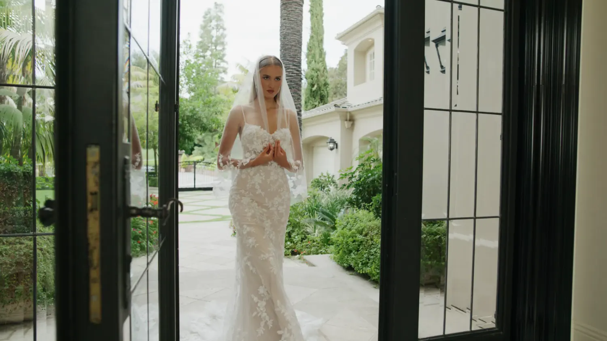
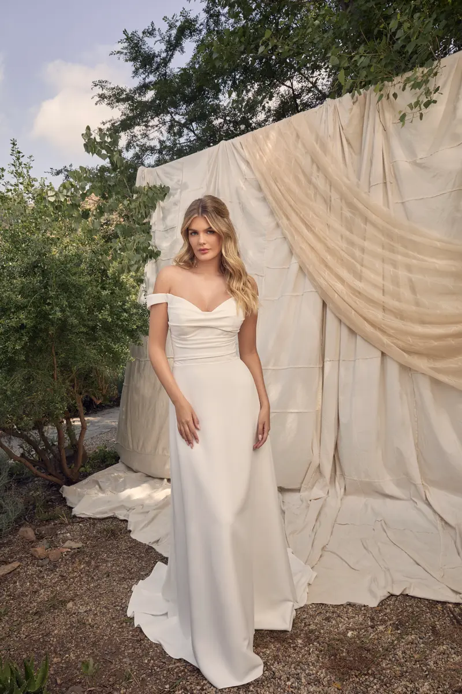
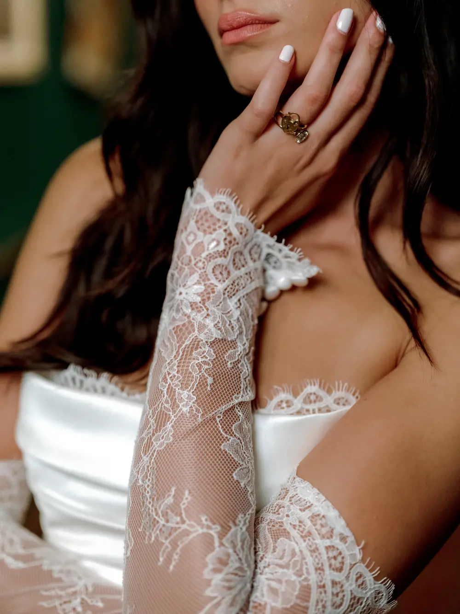
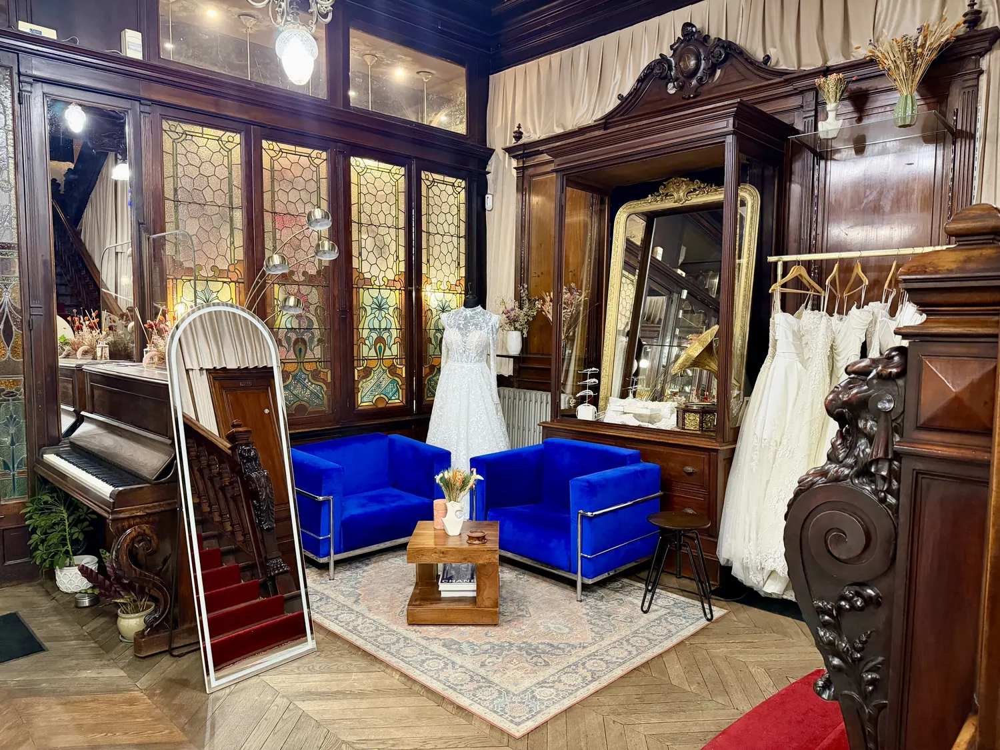

07 — Le défilé
Tessa
Deux-en-un — Casablanca Bridal


Dos dentelle — Uma, Watters Designs

Planche de direction artistique — V8 — 30 octobre 2026
234 rue du Faubourg Saint-Martin — Paris 10ᵉ
01
Une pièce blanche, un grain de papier, et dedans une seule chose qui compte : la robe. Le texte est posé comme un titre de magazine, grand, avec un mot en italique qui respire. Rien n'est encadré.
La rencontre d'un magazine de mode imprimé sur beau papier et d'une cabine d'essayage très lumineuse. Les images arrivent comme un rideau qu'on ouvre, les titres montent comme une ligne qu'on lit, et l'on peut s'arrêter n'importe où.
02 — Palette
Le Grenat agit (boutons, soulignés). Le Rouge ponctue une seule fois par page. Le Sable est la seule « couleur » de la page : un filet, un numéro, un mot. Pas de gris neutre, pas de noir pur, pas de mode sombre.
03 — Typographie
Sirène, princesse, fluide.
Robe de mariée en dentelle
Santana — Casablanca Bridal
« Une heure, le showroom pour vous seule, et la robe qu'on n'attendait pas. »
Instrument Sans pour le corps : taille fluide 16 à 18 px, interligne 1,65, mesure de 62 caractères. Deux familles, pas trois. Même dessinateur que l'Instrument Serif du site actuel : la continuité est dans la main, pas dans la copie.
Légende — Instrument Sans 13 px, approche 0,02 em, Graphite.
Mention — 11 px capitales, approche 0,18 em, Brume

Rideau — l'image s'ouvre par le bas et se pose en contre-échelle 1,08 → 1, 1,2 s
04 — Rythme de l'accueil : deux sections consécutives n'ont jamais la même disposition
05 — Trois portes, pas trois cartes
06 — La morphologie, composée en lettres
Chaque lettre révèle au survol la coupe qu'elle appelle : le texte morphologie est intégré à la composition, pas rangé dans un bloc.
07 — Le défilé
Tessa
Deux-en-un — Casablanca Bridal
Dos dentelle — Uma, Watters Designs
08 — L'édito : le texte SEO est une page de magazine
Choisir sa robe de mariée à Paris commence rarement par une robe. Cela commence par une heure : celle où le showroom est fermé pour vous, où l'on n'essaie pas tout, mais ce qu'il faut. Chez MADAMOON, les collections de quatre maisons sont réunies au 234 rue du Faubourg Saint-Martin, dans le 10ᵉ, et la première question n'est pas « quelle robe » mais « quelle coupe vous ressemble ».
« On n'essaie pas tout. On essaie ce qu'il faut. »
Une sirène dessine la taille et les hanches ; une princesse assume le volume ; une robe fluide suit le mouvement ; un trapèze s'ouvre en A, la coupe la plus universelle ; un deux-en-un change d'allure entre la cérémonie et la soirée. Les matières font le reste : dentelle, crêpe, mikado, tulle. Et la morphologie décide souvent avant le goût.
Texte de démonstration pour la planche. Le copywriting définitif est écrit en phase 6 à partir des clusters.

Légende dans la marge, jamais sous l'image
09 — Boutons et liens
Prendre rendez-vous
Toutes les robes sirène — soulignement Sable au repos, Grenat qui se dessine au survol.
Angles vifs partout. Pas de pilule, pas d'icône, pas d'ombre.

Showroom — film 21:9 en rideau, muet, chargé à l'approche
Essayage privé d'une heure, sur rendez-vous.
+33 6 41 24 38 47